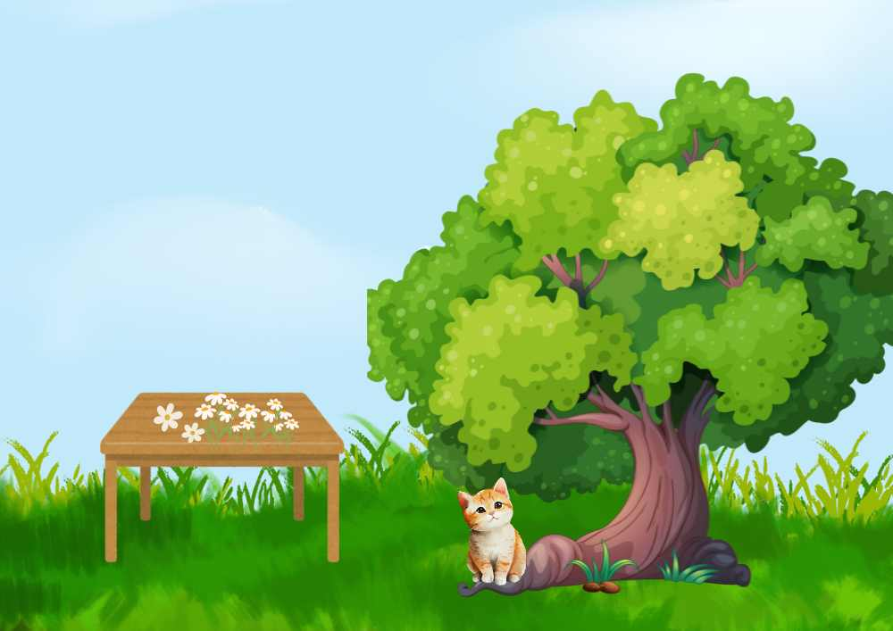

Today we will focus on prepositionsthat always perform two functions in a sentence:
1) Linking two words or a word and a phrase
2) Denoting a relationship between those words or the word and
the phrase it is linking.
Let us look at the sentence below:
The cat is sitting under the tree.
‘Under’ is used before ‘the tree’ and it is linking the cat and the tree by denoting a relationship of location.